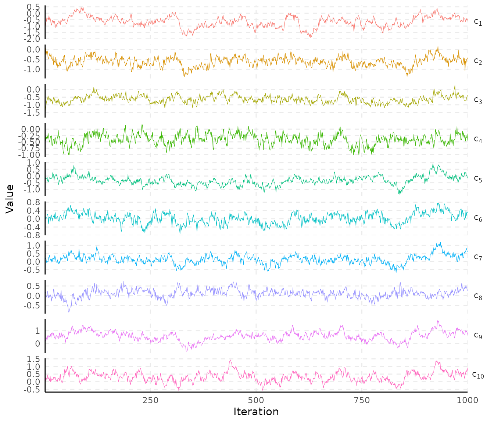
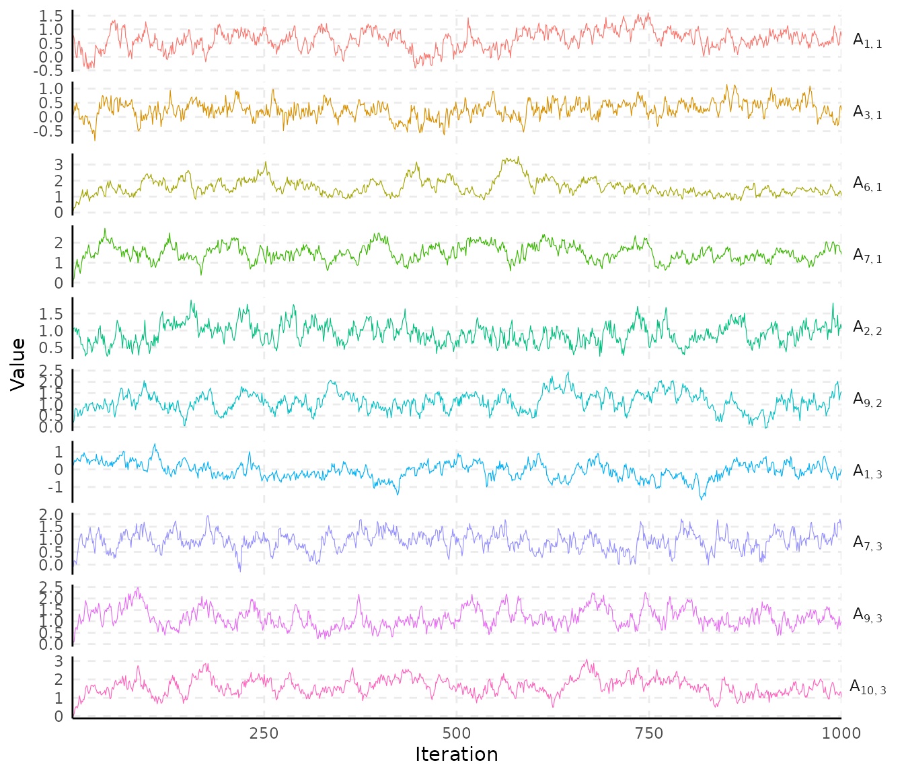
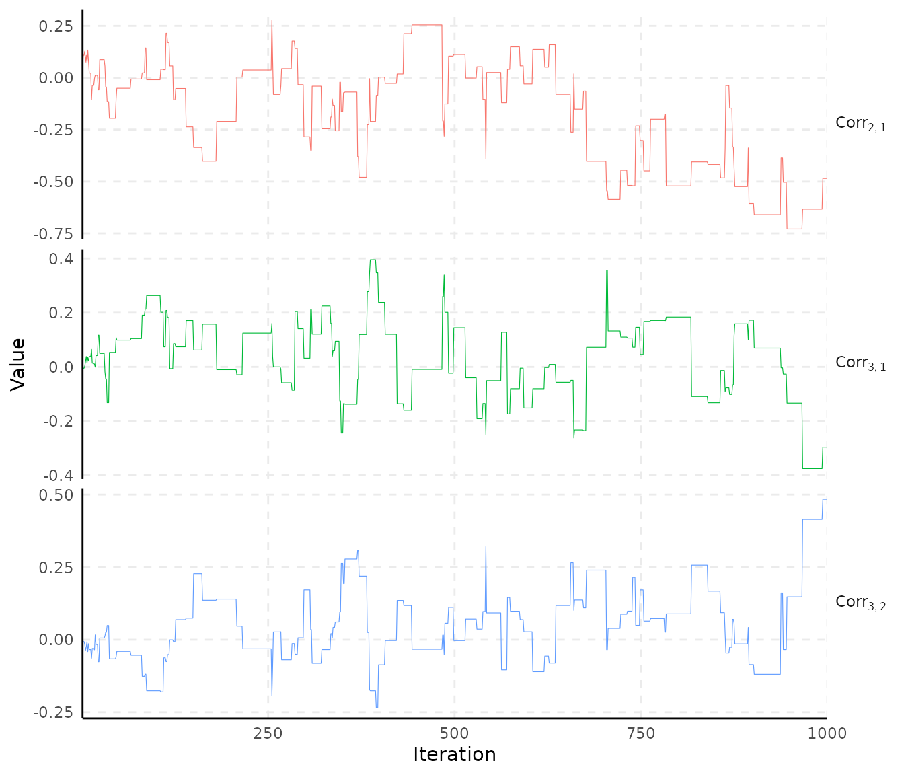
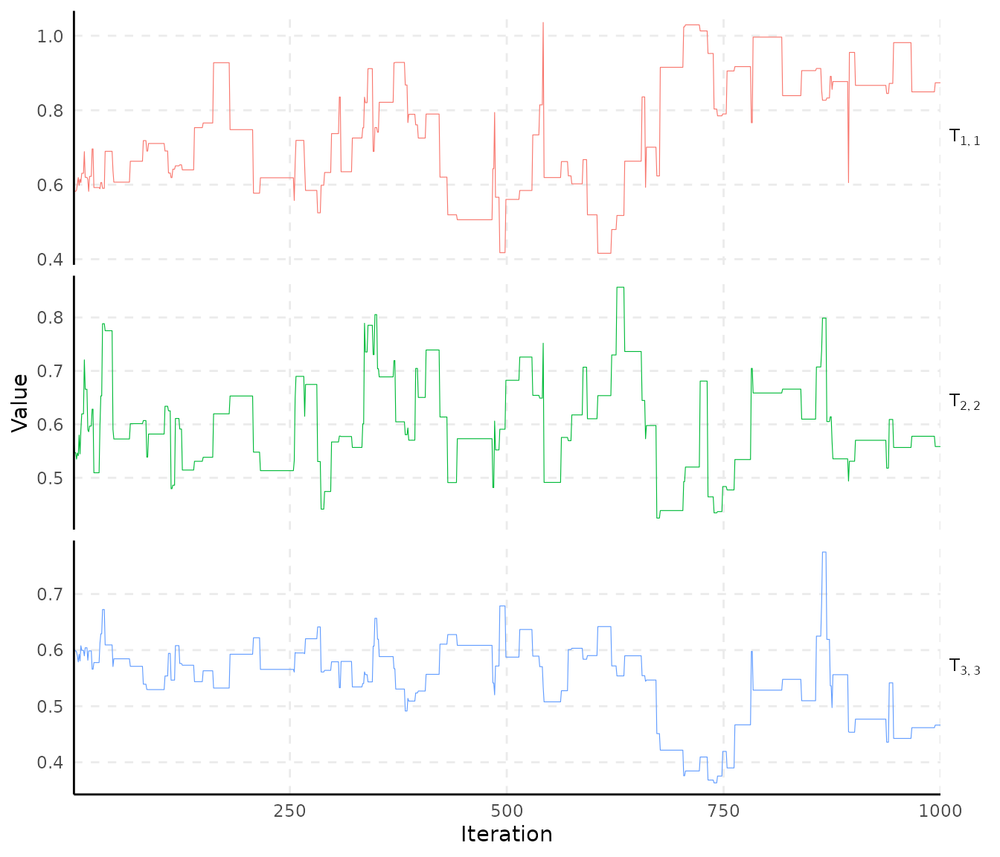
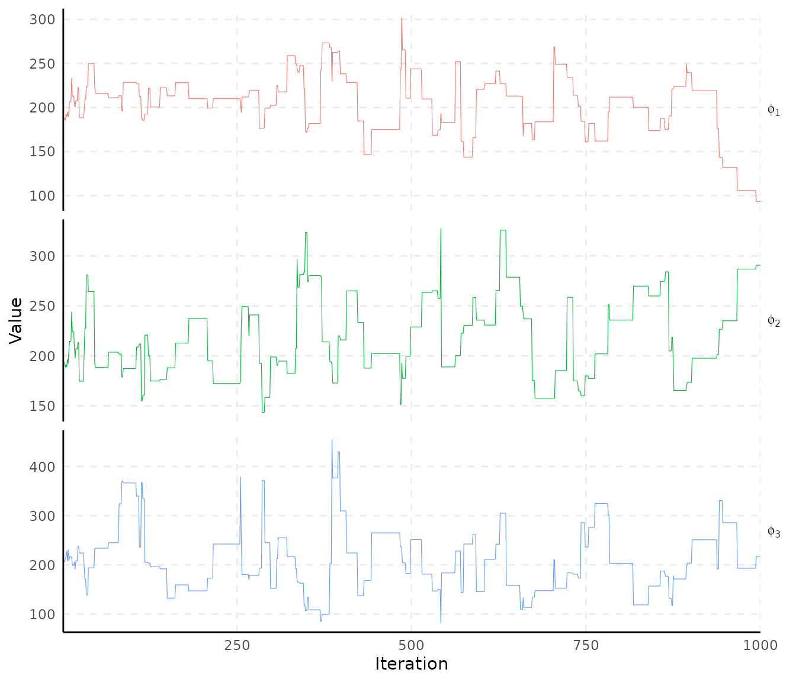
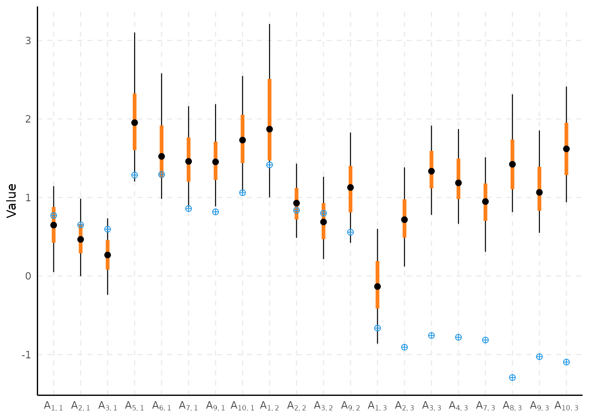

Spatial Item Factor Analysis
Erick A. Chacon-Montalvan
2026-09-13
Source:vignettes/spifa-ipixuna.Rmd
spifa-ipixuna.RmdIntroduction
In this vignette, we show how to use the spifa package to fit a spatial multidimensional 2 parameter logistic model, as used in item response theory. Let be the binary response for item in individual . The model can be defined using an auxiliary variable such that
$$\begin{align} {Y}_{ij} & = \left\lbrace \begin{array}[2]{cc} 1 & \text{if} ~ {Z}_{ij} > 0\\ 0 & \text{otherwise} \end{array} \right.\\ {Z}_{ij} & = c_j + a_j^\intercal\theta_i + \epsilon_{ij}, ~~ \epsilon_{ij} \sim {N}(0, 1) \end{align}$$
where the latent abilities are, in the spatial case, explained by a multivariate Gaussian process rather than assumed independent across individuals.
Load required packages and data
#>
#> Attaching package: 'dplyr'#> The following objects are masked from 'package:stats':
#>
#> filter, lag#> The following objects are masked from 'package:base':
#>
#> intersect, setdiff, setequal, union#> Linking to GEOS 3.12.1, GDAL 3.8.4, PROJ 9.4.0; sf_use_s2() is TRUE
data(ipixuna)ipixuna has one row per (simulated) household, with a
ten-item binary items response matrix, a covariate
wealth, and a spatial coordinate geometry:
| id | wealth | geometry |
|---|---|---|
| 1 | -0.57 | POINT (-71.69689 -7.052244) |
| 2 | -0.92 | POINT (-71.68695 -7.039144) |
| 3 | 1.23 | POINT (-71.68732 -7.047609) |
| 4 | 0.31 | POINT (-71.69005 -7.047915) |
| 5 | -0.06 | POINT (-71.68464 -7.053396) |
| 6 | 2.05 | POINT (-71.69039 -7.042424) |
| 7 | 2.31 | POINT (-71.69486 -7.050021) |
| 8 | 0.17 | POINT (-71.6863 -7.047552) |
| 9 | -0.22 | POINT (-71.69208 -7.053133) |
| 10 | -0.92 | POINT (-71.68778 -7.043805) |
The true generating parameters used to simulate the data (including the discrimination structure) are stored as an attribute, which is convenient both for setting sensible restrictions and for checking recovery below:
#> List of 6
#> $ easiness : num [1:10] -0.68 -0.51 -0.34 -0.17 0 0.17 0.34 0.51 0.68 0.85
#> $ discrimination: num [1:10, 1:3] 0.771 0.651 0.596 0 1.285 ...
#> $ abilities : num [1:100, 1:3] 1.414 0.826 -1.613 -0.909 0.844 ...
#> $ effect : num [1:3] -0.7 0.7 0.3
#> $ resid_params :List of 2
#> ..$ sd : num [1:3] 0.447 0.548 0.447
#> ..$ corr: num [1:3] -0.7 0.1 -0.1
#> $ mgp_params :List of 2
#> ..$ sd : num [1:3] 0.632 0.548 0.707
#> ..$ phi: num [1:3] 100 150 250Fit a SPIFA model for the Ipixuna data
We restrict the discrimination matrix to the structure used to
simulate the data, and let the three latent factors follow independent
Gaussian processes (W = diag(3)) over the household
coordinates. niter is kept small here so the vignette
builds quickly; in practice use a few thousand iterations and check
convergence (see ?plot_trace).
L_a <- (parameters$discrimination != 0) * 1
nfactors <- ncol(parameters$discrimination)
system.time(
samples <- spifa(
items ~ wealth, data = ipixuna, nfactors = nfactors,
niter = 1000, thin = 1, standardize = FALSE,
constraints = list(discrimination = L_a, loading = diag(nfactors),
sd = parameters$resid_params$sd),
priors = list(
loading = list(initial = 0.6, mean = 0.6, sd = 0.4),
range = list(initial = 200, mean = 200, sd = 0.4)))
)#> user system elapsed
#> 69.364 34.134 26.055
samples#> Item factor analysis model: spifa_pred
#> Formula: items ~ wealth
#> Dimensions: 100 respondents, 10 items, 3 latent factors, 3 spatial processes
#> MCMC: 1 chain, iter = 1000, thin = 1, samples = 1000
#>
#> Item model parameters:
#> mean median sd q10 q90 ess_bulk rhat
#> c[1] -0.662 -0.636 0.43 -1.216 -0.145 28.8 1.0
#> c[2] -0.613 -0.603 0.24 -0.926 -0.317 45.6 1.0
#> c[3] -0.627 -0.639 0.24 -0.934 -0.294 35.9 1.0
#> c[4] -0.405 -0.400 0.22 -0.686 -0.128 49.1 1.0
#> c[5] -0.326 -0.334 0.34 -0.750 0.074 23.0 1.0
#> c[6] 0.021 0.023 0.26 -0.327 0.359 29.0 1.0
#> c[7] 0.140 0.139 0.28 -0.208 0.477 31.5 1.0
#> c[8] 0.111 0.120 0.22 -0.152 0.389 43.2 1.0
#> c[9] 0.584 0.593 0.37 0.101 1.049 21.2 1.0
#> c[10] 0.322 0.301 0.33 -0.092 0.733 40.8 1.0
#> A[1,1] 0.623 0.640 0.36 0.145 1.064 24.5 1.1
#> A[2,1] 0.475 0.460 0.30 0.103 0.851 82.0 1.0
#> A[3,1] 0.255 0.264 0.30 -0.138 0.626 24.2 1.1
#> A[4,1] 0.000 0.000 0.00 0.000 0.000 NA NA
#> A[5,1] 2.019 1.967 0.58 1.363 2.856 33.1 1.1
#> A[6,1] 1.601 1.508 0.52 1.044 2.246 24.9 1.0
#> A[7,1] 1.491 1.468 0.40 0.977 2.035 57.0 1.0
#> A[8,1] 0.000 0.000 0.00 0.000 0.000 NA NA
#> A[9,1] 1.472 1.458 0.40 0.993 1.955 33.9 1.1
#> A[10,1] 1.740 1.725 0.48 1.142 2.364 52.2 1.0
#> A[1,2] 1.977 1.868 0.73 1.088 2.889 5.8 1.2
#> A[2,2] 0.912 0.904 0.30 0.533 1.305 57.5 1.0
#> A[3,2] 0.690 0.678 0.32 0.303 1.107 89.4 1.0
#> A[4,2] 0.000 0.000 0.00 0.000 0.000 NA NA
#> A[5,2] 0.000 0.000 0.00 0.000 0.000 NA NA
#> A[6,2] 0.000 0.000 0.00 0.000 0.000 NA NA
#> A[7,2] 0.000 0.000 0.00 0.000 0.000 NA NA
#> A[8,2] 0.000 0.000 0.00 0.000 0.000 NA NA
#> A[9,2] 1.113 1.113 0.42 0.584 1.653 43.6 1.0
#> A[10,2] 0.000 0.000 0.00 0.000 0.000 NA NA
#> A[1,3] -0.064 -0.067 0.47 -0.646 0.524 22.0 1.0
#> A[2,3] 0.755 0.733 0.40 0.285 1.272 44.5 1.0
#> A[3,3] 1.358 1.349 0.34 0.908 1.792 86.1 1.0
#> A[4,3] 1.214 1.170 0.39 0.750 1.743 12.1 1.1
#> A[5,3] 0.000 0.000 0.00 0.000 0.000 NA NA
#> A[6,3] 0.000 0.000 0.00 0.000 0.000 NA NA
#> A[7,3] 0.933 0.955 0.37 0.442 1.381 99.8 1.0
#> A[8,3] 1.453 1.423 0.46 0.911 2.055 49.2 1.0
#> A[9,3] 1.165 1.093 0.42 0.674 1.760 54.2 1.0
#> A[10,3] 1.613 1.610 0.46 1.048 2.176 40.0 1.0
#>
#> Factor model parameters:
#> mean median sd q10 q90 ess_bulk rhat
#> B[1,1] -0.306 -0.304 0.086 -0.42 -0.198 79.5 1.0
#> B[1,2] 0.083 0.084 0.104 -0.05 0.213 26.2 1.0
#> B[1,3] -0.170 -0.170 0.079 -0.27 -0.068 346.8 1.0
#> T[1,1] 0.740 0.725 0.155 0.52 0.928 5.8 1.2
#> T[2,2] 0.598 0.581 0.085 0.49 0.721 41.3 1.0
#> T[3,3] 0.545 0.557 0.069 0.44 0.619 7.0 1.2
#> phi[1] 202.588 209.928 34.498 161.92 243.845 35.8 1.1
#> phi[2] 217.671 206.616 39.347 172.35 278.755 34.4 1.1
#> phi[3] 208.616 201.712 63.953 137.07 285.840 38.2 1.0
#> Corr[2,1] -0.183 -0.104 0.266 -0.59 0.136 3.4 1.2
#> Corr[3,1] 0.031 0.062 0.144 -0.14 0.184 29.3 1.1
#> Corr[3,2] 0.056 0.047 0.131 -0.10 0.240 28.3 1.1
#>
#> ess_bulk is the bulk effective sample size; rhat is the potential
#> scale reduction factor on split chains (Rhat = 1 at convergence).
#> Use summary() for the full set of statistics (incl. ess_tail).
attr(samples, "fit_args")$model_type#> [1] "spifa_pred"Summarise samples
summary(samples, burnin = 100, select = "c")#> # A tibble: 10 × 12
#> variable mean median sd mad q2.5 q10 q90 q97.5 ess_bulk ess_tail rhat
#> <chr> <dbl> <dbl> <dbl> <dbl> <dbl> <dbl> <dbl> <dbl> <dbl> <dbl> <dbl>
#> 1 c[1] -0.698 -0.668 0.412 0.440 -1.59 -1.24 -0.178 -0.00619 30.4 53.8 1.03
#> 2 c[2] -0.617 -0.603 0.240 0.237 -1.12 -0.933 -0.329 -0.152 39.4 84.8 1.00
#> 3 c[3] -0.613 -0.628 0.243 0.254 -1.04 -0.925 -0.272 -0.117 26.2 147. 1.05
#> 4 c[4] -0.392 -0.386 0.212 0.205 -0.824 -0.672 -0.118 -0.000719 40.5 80.8 1.07
#> 5 c[5] -0.356 -0.371 0.337 0.295 -0.976 -0.773 0.0492 0.390 5.03 20.7 1.16
#> 6 c[6] 0.00137 -0.00708 0.266 0.278 -0.503 -0.341 0.343 0.498 16.7 32.7 1.09
#> 7 c[7] 0.130 0.131 0.283 0.240 -0.435 -0.234 0.463 0.735 28.5 54.1 1.01
#> 8 c[8] 0.136 0.138 0.203 0.193 -0.249 -0.120 0.397 0.556 42.6 94.6 1.05
#> 9 c[9] 0.565 0.572 0.373 0.347 -0.220 0.0840 1.02 1.30 20.0 39.9 1.03
#> 10 c[10] 0.321 0.306 0.331 0.326 -0.301 -0.101 0.722 1.01 39.4 67.6 1.00Visualize results
Traceplots of the easiness (c) and discrimination
(a) parameters:
plot_trace(samples, select = "c")
plot_trace(samples, select = "A")
Traceplots of the residual correlation and of the Gaussian process
hyperparameters (loading matrix T and range
phi):
plot_trace(samples, select = "Corr")
plot_trace(samples, select = "T")
plot_trace(samples, select = "phi")
Credible intervals for the discrimination parameters, against the true simulated values:
plot_interval(samples, select = "A", burnin = 100,
reference = parameters$discrimination)